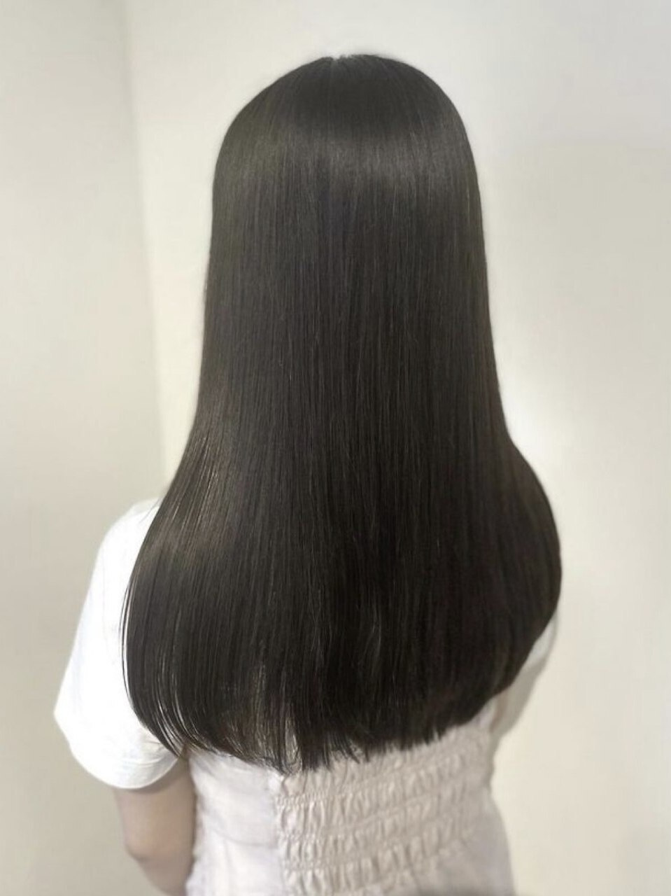

Straightening & Treatment
縮毛矯正・髪質改善くせと向き合う、髪の専門メニュー
縮毛矯正認定技術者在籍|スタンダード縮毛矯正 ¥15,400・ポイント矯正 ¥4,950〜(税込・店舗によりメニューと価格が異なります)

Concern
こんなお悩みはありませんか
True Trust は、くせ・うねり・広がりのお悩みに、髪の状態を見極めた縮毛矯正・髪質改善メニューをご提案する美容室グループです。山梨県内4店舗で施術を承っており、縮毛矯正認定技術者も在籍しています。
Guide
縮毛矯正と髪質改善の違い
「縮毛矯正」と「髪質改善」は、似ているようで役割の異なるメニューです。どちらが合うかは髪質・くせの強さ・ダメージの状態によって変わるため、True Trust ではカウンセリングで髪の状態を見極めたうえでご提案しています。
縮毛矯正は、薬剤と熱の力でくせやうねりをまっすぐな状態に整える施術です。「くせをしっかり伸ばしたい」「湿気による広がりを抑えたい」という方の選択肢になります。
髪質改善は、トリートメントを中心に髪へ栄養を補い、手触り・ツヤ・まとまりを整えていくケアメニューの総称です。縮毛矯正のように強いくせをまっすぐ伸ばす施術ではありませんが、髪への負担を抑えながら扱いやすい状態を目指したい方に向いています。
| 縮毛矯正 | 髪質改善 | |
|---|---|---|
| こんな方に | くせ・うねりをまっすぐ伸ばしたい | 手触り・ツヤ・まとまりを整えたい |
| アプローチ | 薬剤と熱でくせを伸ばす施術 | トリートメントで髪を補修するケア |

Treatment
髪質改善・トリートメントメニュー(税込)
繰り返しのカラーや乾燥によるダメージ、パサつきが気になる方は、トリートメント系のメニューからはじめるのもおすすめです。
Expertise
技術の裏付け
trois 須玉店には、縮毛矯正認定技術者・鈴木 ヒデタカ(スタイリスト歴20年以上・カラーコーディネーター)が在籍しています。
また、和戸店の口コミには、ダメージ毛の改善に関する報告が複数寄せられています(出典: ホットペッパービューティー・2026年7月時点)。
Price
店舗別料金表(税込)
縮毛矯正は4店舗すべてで承っています。メニュー名・価格は店舗により異なります。
| メニュー | 店舗 | 価格(税込) |
|---|---|---|
| スタンダード縮毛矯正 | 和戸店 | ¥15,400 |
| 縮毛矯正+カット | un 下石田店 | ¥20,900〜 |
| 縮毛矯正ストレート | trois 須玉店 | ¥15,400〜 |
| サプリメントストレート | 和戸店 | ¥18,700 |
| プレミアムストレート | 和戸店 | ¥25,300 |
| プレミアムストレート | chichi 竜王駅前店 | ¥18,700 |
| 髪質改善縮毛矯正(カット別) | trois 須玉店 | ¥28,600 |
| ポイント矯正 | un 下石田店 | ¥8,800 |
| ポイント矯正 | trois 須玉店 | ¥11,000 |
| ポイント矯正 | chichi 竜王駅前店 | ¥4,950〜 |
| 髪質改善ヘアエステ | trois 須玉店 | ¥8,800 |
| TOKIOトリートメント | un 下石田店 | ¥6,270 |
| プレミアムトリートメント | 和戸店 | ¥8,800 |
- 全店、ロング料金はいただきません。
- 「〜」表記のメニューは、髪の長さ・くせの状態により価格が変わります。カウンセリング時にご確認ください。
- カットを含まないメニューは、別途シャンプーブロー代(和戸店・trois 須玉店 ¥1,650 / chichi 竜王駅前店 ¥1,100)を頂戴します。
- 掲載価格は2026年7月時点のホットペッパービューティー通常メニューです。
Voice
お客様の声
「縮毛矯正の仕上がりに満足」
「縮毛矯正のあとのケア方法まで丁寧に教えてくれた」
上記は口コミ傾向の要約文です。出典: ホットペッパービューティー(2026年7月時点)
FAQ
よくあるご質問
前髪だけ・部分だけでも施術できますか?
はい。前髪や顔まわりなど、気になる部分だけのポイント矯正(¥4,950〜¥11,000・税込、店舗により異なります)を承っています。
メンズでも縮毛矯正はできますか?
はい。True Trust は全店舗でメンズのお客様を歓迎しています。メンズのくせ毛のお悩みもご相談ください。
どの店舗で施術できますか?
4店舗すべてで縮毛矯正を承っています。メニュー名・価格は店舗により異なりますので、本ページの料金表をご確認ください。
どのくらいの頻度でかけるものですか?
くせの強さ・髪の長さ・メニューによって適切な間隔は異なります。施術の際に、お客様の髪に合わせた次回の目安をご案内します。
縮毛矯正と髪質改善、どちらを選べばいいですか?
髪質・くせの強さ・ダメージの状態によって最適なメニューは変わります。カウンセリングで髪の状態を見極めてご提案しますので、まずはお気軽にご相談ください。